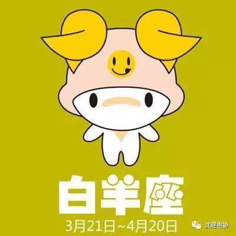
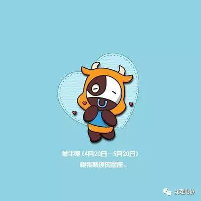
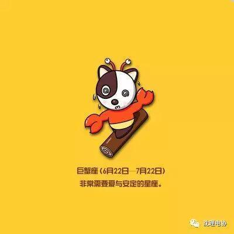
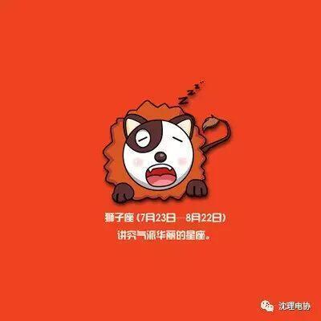
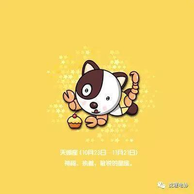
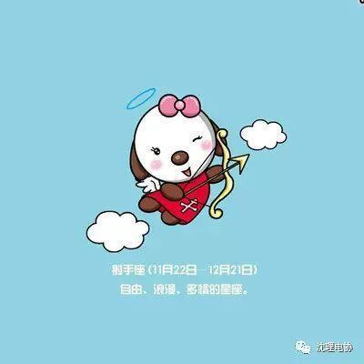
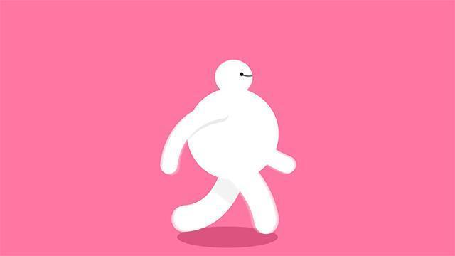

星座小介绍

水瓶座
水瓶座的符号象征水和空气的波，是具象但又抽象的;由水瓶座的神话中，可以看出水瓶座的爱好自由和个人主义。象征水瓶座的波，是高度知性的代表，由波的特性去思考水瓶座的特质，看似有规律但没有具体的形象，是一个不可预测的星座。
双鱼座
双鱼座的符号象征两条鱼，而其中有一条丝带将它们联系在一起;由双鱼座的神话中可以联想到双鱼座逃避的特质。双鱼座的两条鱼是分别游向两个方向，除了表现出双鱼座的二元性之外，也象征了双鱼座的矛盾和复杂。

白羊座
白羊座的符号象征羊的头，是一种象形的方法，取出羊最明显的羊角和鼻梁部分;由白羊座的神话可以联想到一些特质，例如冲动、喜欢自由、勇往直前。而由另一方面，也有人指白羊座的符号是象征新生的绿芽，表现出新生和欣欣向荣的景象。

金牛座
金牛座的符号象征了牛的头，也是以简单的线条描绘出牛的形象;由金牛座的神话可以发现，金牛座的外表温驯，但内心充满欲望。由另一方面看，圆圆的牛脸表现出安逸和享乐，但上面的牛角则提示我们脾气有爆发的时候。
双子座
双子座的符号象征双胞胎，相较于前两个符号，就比较抽象了一点;由双子座的神话可以知道双子座的二元性和内在的矛盾。其实双子座所代表的不只是二元性，而是所谓的多元，一方面可以看出其广，一方面也暗示了可能的肤浅。

巨蟹座
巨蟹座的符号象征胸，也就是说明了巨蟹和胸有关;由巨蟹座的神话可以想像，有一种家的感觉，同时也和忌妒有关。另一方面也有人指出，其实巨蟹座的符号是象征巨蟹的甲壳，由此也可看出巨蟹座所具自我保护特质，和隐藏的习惯。

狮子座
狮子座的符号象征狮子的尾巴，充分显示了狮子座的个性;由狮子座的神话可以联想到，狮子座的风流与热情。由狮子去联想狮子座的特性，很容易就可以想到很多，热情、同情心，但是别忘了，母狮子才是出外狩猎的。
处女座
处女座的符号象征女性的生殖器;但如果你注意看右半边，就可以发现。处女座的神话中，可看出收成的意涵。由处女去联想处女座的特质，也可以发现一些，如小心、谨慎、沈静和羞怯。由另一方面，处女也代表了安静和敏锐。
天秤座
天秤座的符号象征一杆秤子，希腊字母Ω代表了衡量，而下面的"-"则代表了衡量的基础。在天秤座的神话中可以看出天秤座公平的特质。但由那一杆秤子，可以看出天秤座追求平衡的基本念头，同时，摇摆不定的秤子也表现出天秤座的犹豫不决。

天蝎座
天蝎座的符号象征男性的生殖器;由天蝎座的神话中，可以知道天蝎座是忌妒的来源。由男性生殖器可以知道天蝎座对性的欲望，另一方面，也有人认为天蝎座的符号是象征蝎子的甲壳和毒针，表现出复仇的特质。

射手座
射手座的符号象征是射手手中的箭，回到象形的形式;由射手座的神话可以看出射手座的智慧和对知识的追求。射手的原型是拿弓箭的人马，下半身的马象征着对理想的追求，上半身的人象征知识和智慧，而手中的箭，则表现出射手座对精神层次追求的一面。
摩羯座
摩羯座的符象征羊的头和鱼的尾，抽象但基本上是象形的;由摩羯座的神话我们可以知道摩羯的担心和恐惧。摩羯座又称山羊座，这是由于其上半身的山羊形象所致，有一种向上登峰的欲求，但别忘了，在水面之下摩羯座也有象征感情的鱼尾。
编辑：信息部 丁宇亭


长按二维码识别关注

简介： 星座是指占星学中必不可少的组成部分之一，也是天上一群群的恒星组合。自从古代以来，人类便把三五成群的恒星与他们神话中的人物或器具联系起来，称之为"星座"。